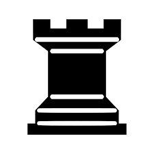
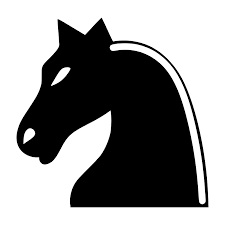
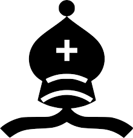
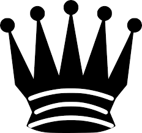
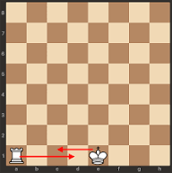

There are 6 different types of pieces in chess. The king, the queen, the rook, the bishop, the knight, and the pawn; Ordered from greatest importance to least. To play the game of chess, each player takes turns making moves that are legal until a game ending condition is reached.
Basic Rules:
If your opponent moves a piece and the piece threatens to be able to take your king on the next move, that it called Check. The player "in check" must either move their King, capture the piece putting the King in check, or block the check (not possible if it is a knight check). In addition King's cannot move into the path of danger, meaning can't move into Check, or capture into Check. Also, other pieces cannot move so that the King is in check. If there are no moves to escape Check, the King is in Check; in other words the King is garunteed to be taken on the next move (if that was allowed), this is a Checkmate. The King is dead, the game is over. The person who Checkmated the other King wins. Fun Fact: In the first stages of the game when checkmate is a serious threat, the King is one of the least value pieces, as it is a hinderance to you, because you have to protect it. However, in the final stage of the game (called the endgame (usually when it is just the Kings and some pawns and a piece or two)) it is actually extremely valuable, and if you use it aggresively, it can win you games.
The King is the most important piece, as the entire game hinges on his safety. If you King gets Checkmated (which comes from words meaning "the king is dead"), the game is over, your opponent wins. The King's safety is the the main goal of the game, then comes trying to checkmate your oppenent. The King can move one square forward in any direction, so long as the move is legal (See Pieces and Basic Rules & Check and Checkmate). The King can capture pieces in the same ways as it can move. * Note: King's can never be one square away from each other. In the starting position, both Kings are on the E-file, with the white King on E1 and the balck King on E8.
The Rook is worth 5 material points.** The Rook is generally the third most valuable piece. It can move left, right, up, or down as many squares as it wants, in a straight line, as long as the moves are legal (See Pieces and Basic Rules & Check and Checkmate).* It can capture pieces in the same way as it moves. Each player gets two rooks, one in each of the back corners, located at A1, H1, A8, H8. Fun Fact: A King and a Rook alone can force Checkmate.

The Knight is worth 3 material points.** It is generally considered the fifth strongest piece, after the Bishop. A Knight is the only piece that can jump over pieces, as it is a horse. The Knight also moves way different than all of the other pieces. It moves in one direction two spaces, and then a perpindicular direction one space, creating an L-shape as long as the moves are legal (See Pieces and Basic Rules & Check and Checkmate). It captures in the same way that it moves. Each player has two, and they are located next to the Rooks on the back rank, at B1, G1, B8, G8. Fun fact: Two Knights and King cannot force Checkmate, but a Knight and a Bishop can.

The Bishop is worth 3 points of material points.** It is generally considered the fourth strongest piece, barely edging out the Knight which is also worth 3 points. It is probably considered slightly better because of its quick movement, and its ability to trap a knight on the edge of the board. A Bishop can move diagonally in straight lines, as long as the move is legal (See Pieces and Basic Rules & Check and Checkmate). It also captures in the same way that it moves. Each player has two, and they are located next to both of the Knights on the back rank, at C1, F1, C8, F8. Fun Fact: Two Bishops and the King is enough to force Checkmate.

The Queen is the most powerful piece on the board. It is worth nine material points.** It can move like a Bishop and a Rook combined. It moves straight lines diagonally or a regular cardinal direction how many squares it wants, so long as the move is legal (See Pieces and Basic Rules & Check and Checkmate). It captures in the same way that it moves. Each player has one Queen, they are located on D1 and D8. Fun Fact: A King and Queen can force Checkmate.

The Pawn is considered to have the least amount of material value, only being assigned one point. However, pawns are one of the most important pieces on the board, and so much depends on them. This is why they are my favorite piece. A Pawn is also like no other piece and has very many special moves. Pawns start on the row in front of the back row, and fill the whole thing up. Each player has eight of them. Pawns normally move forward one square, but if they are in their starting position they have the option to move forward 2 spaces, if the move is legal (See Pieces and Basic Rules & Check and Checkmate). However, Pawns do not capture in the same way that they move. Instead, they capture moving diagonally one square forward. Pawns can never move backward and so there is a special rule if a pawn makes it to the other side of the board, called promotion.*** Fun Fact: Pawns provide the "skeleton" to a game and dictate the strategy and direction of the game, which is why pawns together are called a Pawn Structure. There is also another special move called En Passant.****
* The King and Rook have a special move called "Castling" this can only happen when both the King and a choice Rook have not moved in the game. You may Castle on either side. In addition, there cannot be any pieces in between the two. The King moves two squares towards the Rook, and the Rook goes to the other side of the King. You cannot Castle through Check, or into Check. Meaning, when moving your King, if he touches a square that your opponent threatens, that is not allowed. See picture for reference.

Image citations from top down. Image by unknown from Openclipart. Image by unknown from Free SVG vector files. Image by unknown from Openclipart. Image by unknown from Needpix.com. Image by unknown from Needpix.com. Image by unknown from Openclipart. Image by unknown from unknown.